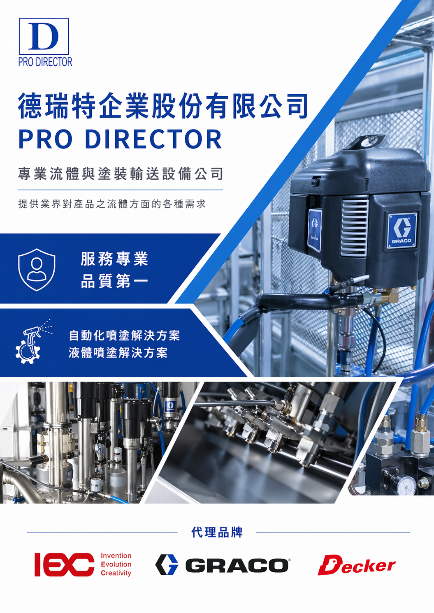

塗裝與噴塗系統
依產線節拍、塗料特性與工件條件規劃供料、循環與噴塗流程，協助提升塗裝品質與作業一致性。
About Us
德瑞特企業股份有限公司專注於流體與塗裝輸送設備，服務範圍涵蓋噴塗設備選型、系統規劃、現場導入與後續支援。面對不同產線、材料與製程條件，協助客戶配置合適的設備與解決方案。
從自動化噴塗到液體噴塗應用，德瑞特重視設備穩定、施工品質與長期維護便利性，讓客戶在製造現場取得更可靠的生產表現。
先理解材料、工件、產線節拍與品質要求，再規劃設備組合。
整合泵浦、管線、噴槍、閥件、控制與周邊設備，減少導入落差。
提供安裝、測試、操作說明與維護建議，協助產線穩定運作。
Services
依產線節拍、塗料特性與工件條件規劃供料、循環與噴塗流程，協助提升塗裝品質與作業一致性。
針對不同材料黏度、壓力與流量需求，提供泵浦、管線、閥件與輸送系統配置建議。
支援填充、接著、密封與定量吐出需求，協助客戶穩定控制材料供給量與製程品質。
提供設備安裝、測試、操作說明與後續支援，協助客戶降低導入風險。
Equipment Applications
對應塗料、保護塗層與厚膜塗裝需求，協助評估壓力、流量、噴嘴與現場操作條件。
針對二液型材料、接著劑與密封材料，規劃混合比例、供料穩定性與清洗維護方式。
依材料黏度與產線距離配置柱塞泵、隔膜泵、管線與調壓元件，建立穩定供料系統。
協助塗料、膠材與流體材料維持混合均勻，降低沉澱、脈動與批次品質差異。
面對膏狀、膠狀與高固含量材料，評估擠出、壓送、定量吐出與管路阻力。
整合噴槍、閥件、調壓、過濾與控制元件，讓設備更容易接上現有自動化流程。
Solutions

Authorized Brands
Technology
德瑞特以流體與塗裝輸送設備整合為核心，依客戶的材料特性、產線節拍、空間條件與品質要求，規劃穩定、可維護的供料與噴塗系統。
討論設備需求對應塗料供給、循環、噴槍與自動化塗裝流程，重視成膜品質、穩定供料與施工效率。
面對不同材料與產線條件，評估流量、壓力與控制方式，讓供給過程更穩定可控。
支援高黏度材料、密封膠與接著材料的定量吐出，降低材料波動對製程品質的影響。
對應噴塗、塗料供給與塗裝製程需求，協助穩定塗料輸送與現場操作品質。
面對製造現場的材料轉移、供料與管線配置，評估泵浦、壓力、流量與控制方式。
支援膠材、密封材料與高黏度材料應用，協助改善供料穩定性與定量控制。
Case Studies
針對連續生產的塗裝需求，協助評估塗料供給、循環、過濾、調壓與噴塗控制，讓現場能更穩定地銜接自動化設備。
面對高黏度材料流動不易、吐出量不穩定的情境，從泵浦、管路阻力、閥件與控制方式切入，改善供料穩定性。
針對既有產線設備老化或維護不易的狀況，協助盤點現場條件，規劃可分階段導入的設備更新與周邊配置。
Customers
Contact
歡迎提供設備需求、現場條件或產品應用方向，德瑞特將協助評估合適的流體與塗裝輸送方案。